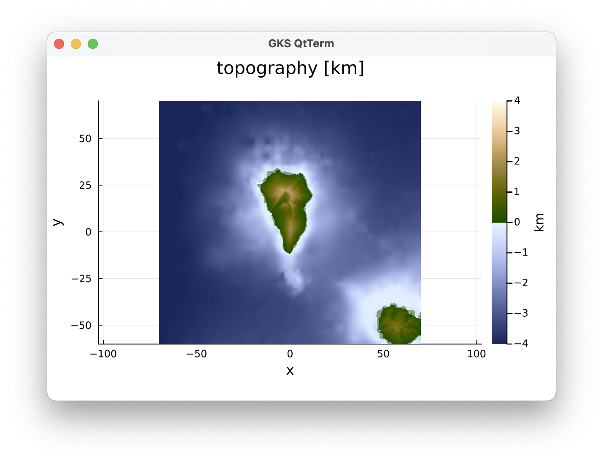
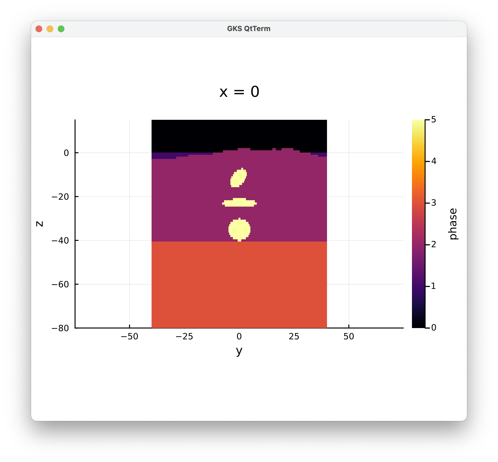

La Palma Volcano setup
In this example, we will show how to create a 3D model setup for the 2020 La Palma eruption. We mainly focus on the LaMEM part; see the GeophysicalModelGenerator package for more details on how to plot earthquake data etc.
1. Load packages & topography
Let's start with what we need:
julia> using LaMEM, GeophysicalModelGenerator, GMT, Plots
Loading GMT routines within GMG
WARNING: using GMT.meshgrid in module GeophysicalModelGenerator conflicts with an existing identifier.
adding Plots.jl plotting extensions for LaMEMLoad the topography, choose a projection point & project the topography to cartesian coordinates:
julia> Topo = ImportTopo(lon = [-18.7, -17.1], lat=[28.0, 29.2], file="@earth_relief_03s.grd");
julia> proj = ProjectionPoint(Lon=-17.84, Lat=28.56);
julia> Topo_cart = Convert2CartData(Topo, proj)
CartData
size : (1921, 1441, 1)
x ϵ [ -86.09445705828863 : 73.67229892155609]
y ϵ [ -63.5531883197492 : 73.28446155584604]
z ϵ [ -4.38352685546875 : 2.414]
fields : (:Topography,)
attributes: ["note"]This shows the dimensions of our domain in kilometers. The issue is that this projected topography is not an orthogonal grid, but (slightly) distorted. In any case, we see the approximate dimensions of the grid (in horizontal directions), so we can create an orthogonal grid on which to project this:
julia> Topo_LaMEM = CartData(xyz_grid(-70:.2:70,-60:.2:70,0));
julia> Topo_LaMEM = ProjectCartData(Topo_LaMEM, Topo, proj)We can plot it with:
julia> plot_topo(Topo_LaMEM, clim=(-4,4))
2. LaMEM Model setup
Next, we generate a model setup for LaMEM with:
julia> model = Model(Grid(x=[-50.,50.], y=[-40.,40.], z=[-80,15] , nel=(64,64,32)),
BoundaryConditions(temp_bot=1350, open_top_bound=1),
Scaling(GEO_units(stress=1e9Pa, length=1km)),
Time(nstep_max=20) )
LaMEM Model setup
|
|-- Scaling : GeoParams.Units.GeoUnits{GEO}
|-- Grid : nel=(64, 64, 32); xϵ(-50.0, 50.0), yϵ(-40.0, 40.0), zϵ(-80.0, 15.0)
|-- Time : nstep_max=20; nstep_out=1; time_end=1.0; dt=0.05
|-- Boundary conditions : noslip=[0, 0, 0, 0, 0, 0]
|-- Solution parameters : eta_min=1.0e18; eta_max=1.0e25; eta_ref=1.0e20; act_temp_diff=0
|-- Solver options : direct solver; superlu_dist; penalty term=10000.0
|-- Model setup options : Type=files;
|-- Output options : filename=output; pvd=1; avd=0; surf=0
|-- Materials : 0 phases; Set geotherm and phases
We can set an initial constant, linear, geotherm with:
julia> Z = model.Grid.Grid.Z;
julia> Geotherm=30
julia> model.Grid.Temp = -Z.*Geotherm;We will cutoff extreme values with:
julia> model.Grid.Temp[model.Grid.Temp.<20] .= 20;
julia> model.Grid.Temp[model.Grid.Temp.>1350] .= 1350;
julia> model.Grid
LaMEM grid with constant Δ:
nel : ([64], [64], [32])
marker/cell : (3, 3, 3)
x ϵ [-50.0 : 50.0]
y ϵ [-40.0 : 40.0]
z ϵ [-80.0 : 15.0]
Phases : range ϵ [0 - 0]
Temp : range ϵ [20.0 - 1350.0]Set Phases to two everywhere:
julia> model.Grid.Phases .= 2;Now set points above the topography to zero (will be air later), the ones above the topography but below zero to 'water` and below 40 km to mantle (if we had a Moho surface we could use that):
julia> above_surface!(model, Topo_LaMEM, phase=0, T=0)
julia> model.Grid.Phases[Z.<-0 .&& model.Grid.Phases .== 0] .= 1;
julia> model.Grid.Phases[Z.<-40] .= 3;Finally, we define some magma chambers:
julia> add_sphere!(model, cen=(0,0,-35), radius=5, phase=ConstantPhase(5), T=ConstantTemp(1200));
julia> add_ellipsoid!(model, cen=(-1,0,-11), axes=(3,3,8), StrikeAngle=225, DipAngle=45, phase=ConstantPhase(5), T=ConstantTemp(1200));
julia> add_ellipsoid!(model, cen=(-0,0,-23), axes=(8,8,2), StrikeAngle=0, DipAngle=0, phase=ConstantPhase(5), T=ConstantTemp(1200));We can plot a cross-section through the model:
julia> plot_cross_section(model, x=0, field=:phase)
Set material properties
First, we set air and water properties:
julia> air = set_air(alpha=3e-5, G=1e10, nu=0.2, ch=10e6, fr=30)
Phase 0 (air):
rho = 100.0
eta = 1.0e17
G = 1.0e10
nu = 0.2
ch = 1.0e7
fr = 30.0
alpha = 3.0e-5
Cp = 1000.0
k = 30.0
julia> water=deepcopy(air); water.Name="water"; water.ID=1Next, we set the crust:
julia> crust = Phase(Name="Crust", ID=2, rho=2900, alpha=3e-5, disl_prof="Mafic_Granulite-Ranalli_1995",
G=3e10, nu=0.2, k=3, Cp=1000, ch=10e6, fr=30)
Phase 2 (Crust):
rho = 2900.0
disl_prof = Mafic_Granulite-Ranalli_1995
G = 3.0e10
nu = 0.2
ch = 1.0e7
fr = 30.0
alpha = 3.0e-5
Cp = 1000.0
k = 3.0 The mantle is done as a copy of that, while changing a few parameters:
julia> mantle = copy_phase(crust, Name="Mantle", ID=3, rho=3320.0, disl_prof="Dry_Olivine-Ranalli_1995", G=6.5e10, k=3.3);And we define two different types of magma:
julia> andesite = Phase(Name="andesitic_magma",ID=4,rho=2700, alpha=3e-5, eta=1e18, G=1.5e10, nu=0.2, k=3, Cp=1000, T=980, ch=1e7, fr=30);
julia> dacite = copy_phase(andesite,Name="dacite_magma", ID=5, rho=2575.0, eta=1e19, T=800.0)Now we add all of this to the model:
julia> rm_phase!(model)
julia> add_phase!(model, air, water, crust, mantle, andesite, dacite)And check that we indeed have 6 phases:
julia> model
LaMEM Model setup
|
|-- Scaling : GeoParams.Units.GeoUnits{GEO}
|-- Grid : nel=(64, 64, 32); xϵ(-50.0, 50.0), yϵ(-40.0, 40.0), zϵ(-80.0, 15.0)
|-- Time : nstep_max=50; nstep_out=1; time_end=1.0; dt=0.05
|-- Boundary conditions : noslip=[0, 0, 0, 0, 0, 0]
|-- Solution parameters : eta_min=1.0e18; eta_max=1.0e25; eta_ref=1.0e20; act_temp_diff=0
|-- Solver options : direct solver; superlu_dist; penalty term=10000.0
|-- Model setup options : Type=files;
|-- Output options : filename=output; pvd=1; avd=0; surf=0
|-- Materials : 0 phases; Add topography to model
We can add the topography grid that we created earlier to the model with:
julia> add_topography!(model, Topo_LaMEM)Set solver options
You will want to use a multigrid solver in this case:
julia> model.Solver = Solver(SolverType="multigrid", MGLevels=4)3. Run LaMEM
Running LaMEM is simple; here on 4 processors:
julia> run_lamem(model, 4)
Saved file: Model3D.vts
Written LaMEM topography file: topography.txt
Writing LaMEM marker file -> ./markers/mdb.00000000.dat
Writing LaMEM marker file -> ./markers/mdb.00000001.dat
Writing LaMEM marker file -> ./markers/mdb.00000002.dat
Writing LaMEM marker file -> ./markers/mdb.00000003.dat
--------------------------------------------------------------------------
Lithosphere and Mantle Evolution Model
Compiled: Date: Apr 7 2023 - Time: 22:11:23
Version : 1.2.4
--------------------------------------------------------------------------
STAGGERED-GRID FINITE DIFFERENCE CANONICAL IMPLEMENTATION
--------------------------------------------------------------------------
Parsing input file : output.dat
Finished parsing input file : output.dat
--------------------------------------------------------------------------
Scaling parameters:
Temperature : 1000. [C/K]
Length : 1000. [m]
Viscosity : 1e+20 [Pa*s]
Stress : 1e+09 [Pa]
--------------------------------------------------------------------------